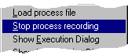

| Automatic menu |
| Overview |
Click in the picture below on one of the menu-commands for info.
| Load process file |
When the menu-item is clicked, the dialog in the picture below appears. All files with the extension *.prs in the current directory are visible. A single file can be chosen and will be loaded when Open is clicked.
| loadprocess |
| Start process recording |
All commands given will be written in the process file. The menu-item Start process recording is now changed in Stop process recording (See picture below). Clicking this item will stop the recording.
|  |
| record |
| Show execution dialog |
In the command edit box, a command can be typed and executed by clicking the Execute button. This makes it possible to use the graphical interface with commands typed in at the commandline. This can be very useful with, for instance, the transform function. Since the transform values are stored in memory, a transformation can be done with only typing transform.
| Show identification dialog |
See selecting structures for info on how to select strucutures.
| Show distance dialog |
This dialog shows the startpoint and a list of relative points, each with info on the distance (x, y and total) and the angle between this point and the startpoint.
Selecting a new startpoint, will clear all relative points.
When Clear is clicked, all relative points are removed and startpoint is set at (0,0). This also happens when a the program is started or when a new file is loaded.
| Index | Top of page |